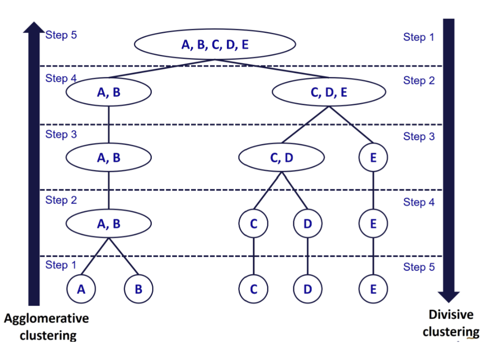

Spatially Constrained Cluster Analysis
#PERSONAL NOTES
Typology of Cluster Analysis Technique
Hierarchical Clustering

1.1 Agglomerative Clustering ( AGNES or Agglomerative Nesting)
- Bottom-up. Plot with dendrogram.
- Each object initially considered as a single-element cluster (leaf).
- Algorithm for each step is to combine 2 clusters that are most similar into a new bigger cluster (node).
compute proximity matrix before the combination of data points. Subsequently, update the proximity matrix each iteration.
3 common methods to calculate proximity matrix :
- Euclidean distance
- City-block distance
- Chebychev distance
common methods :
Maximum / Complete Linkage Clustering
Minimum / Single Linkage Clustering
Mean / Average Linkage
Centroid
Ward’s Minimum Variance method
1.2 Divisive Clustering ( DIANA or Divise Analysis )
Top-down.
Each step, the most heterogeneous cluster is divided into two.
Partitioning Clustering (K-means)
==========
Univariate EDA
check the distribution of the cluster variables.
determine the differences in data ranges.
variable standardisation techniques if unable to change the scales for the variables’ value :
Z-score
Min-max = value range of 0 to 1
Decimal scaling
variable standardisation techniques above need to be done first before the transformation for clustering.
Bivariate EDA
- check the correlation between input variables (i.e. correlation coefficient >= 0.85).
- not recommended to apply PCA for highly correlated social economic aspects. Unless clustering analysis is single/home value, e.g. reflection index value from satellite images.
- VIF (variance inflation factor) method to determine which highly correlated variables not to include in the analysis - regression? (!!!!! confirm this statement)
- standardisation should not change distribution, should provide quite similar output while transformation can resulted relatively large differences. (!!!!! confirm this statement)
==========
Spatially Constrained Clustering Methods
2 grouping approaches :
- Grouping Objects
grouping similar contiguous objects into new aggregrate areal units.
- tension between attribute similarity
- Grouping Observations
- locational similarity : group spatially contiguous observations only.
==========
Spatial Kluster Analysis (SKATER) method
Construct minimum spanning tree from adjacency graph.
Prune the tree (cut edges) to achieve maximum internal homogeneity.
Spatially Constrained Clustering using SKATER method.
Reference: AssunÇão, R. M ; Neves, M. C ; Câmara, G ; Da Costa Freitas, C (2006) “Efficient regionalization techniques for socio-economic geographical units using
minimum spanning trees”, International Journal of Geographical Information Science, Vol.20 (7), p.797-811
==========
Contiguity as a Graph
Objective is to minimize within-group dissimilarity (maximize between-group).
Network connectivity based on adjacency between nodes (locations).
Edge value reflects dissimilarity between nodes.
==========
Minimum Spanning Tree Algorithm
Connectivity graph, G = (V, L),
V = vertices (nodes),
L = edges path - a sequence of nodes connected by edges v1 to vk :
(v1,v2), ..., (vk-1,vk).Spanning tree - tree with n nodes of G unique path connecting any two nodes n-1 edges.
Minimum spanning tree - spanning tree that minimizes a cost function minimise sum of dissimilarities over all nodes.
References
What Is Geographic Segmentation And Why You Need It.. https://manychat.com/blog/geographic-segmentation/
October 16, 2019 Michael Keenan